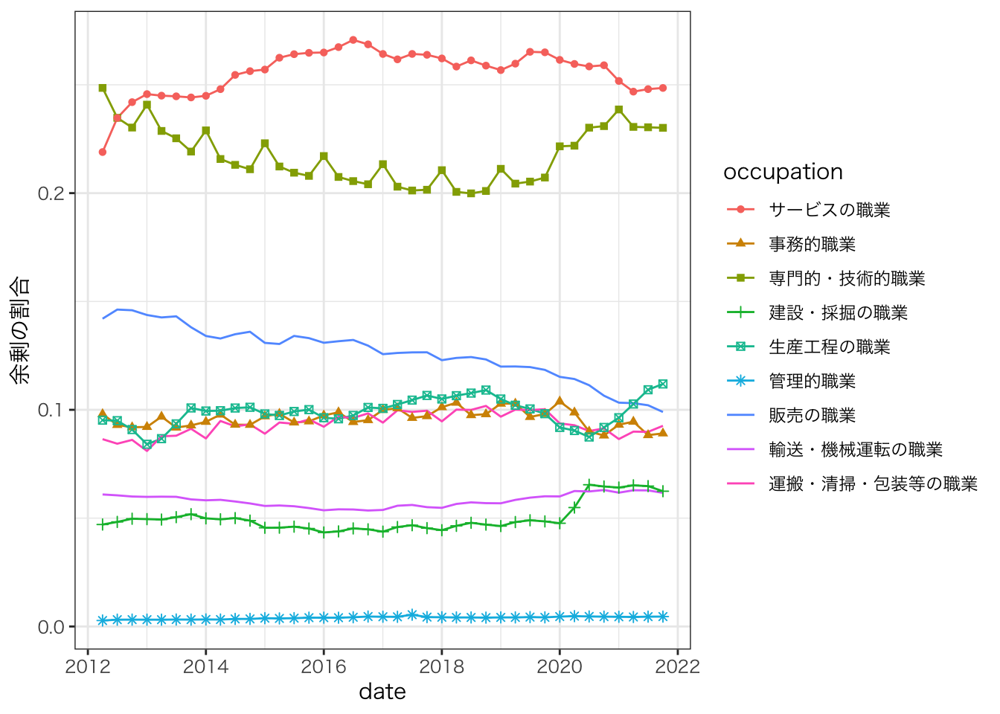
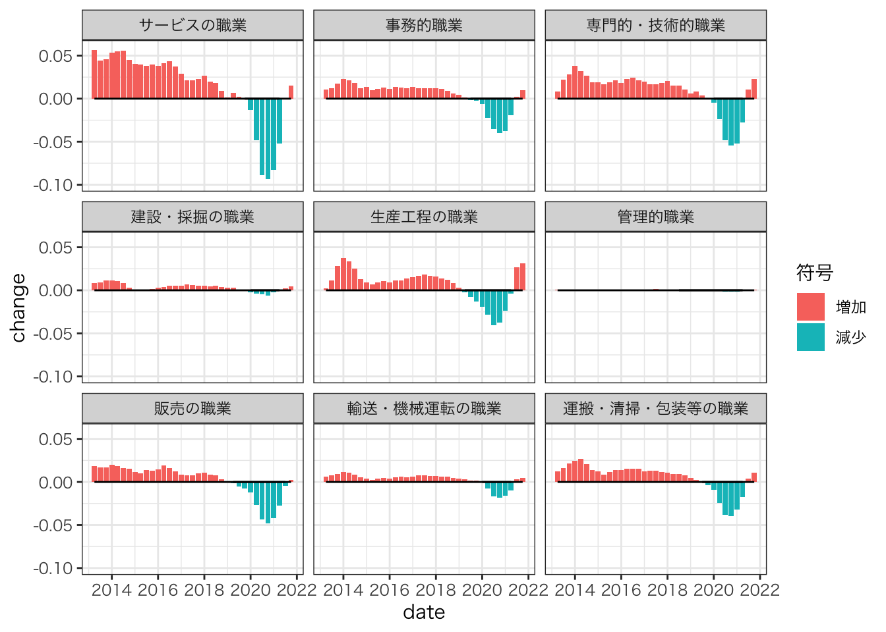
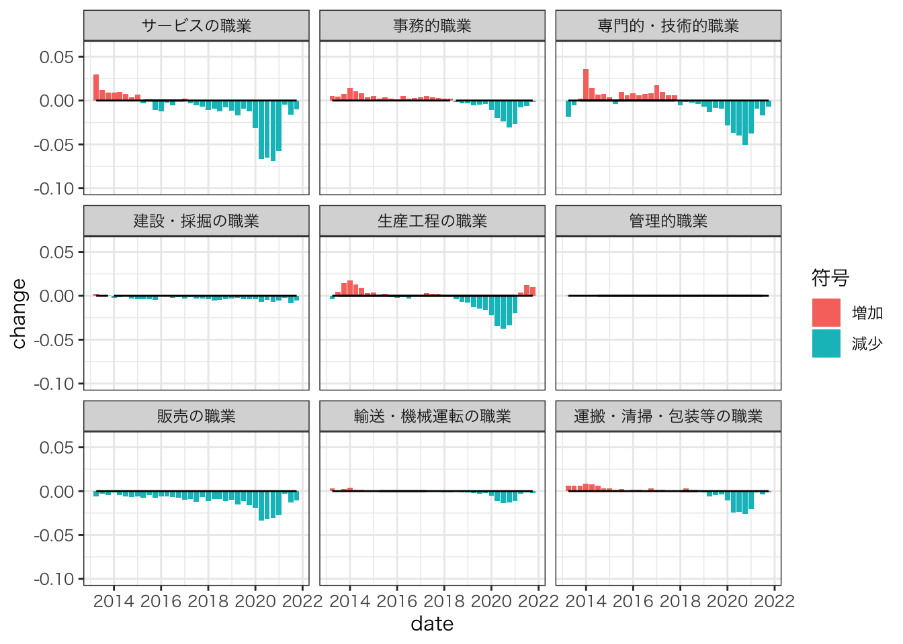
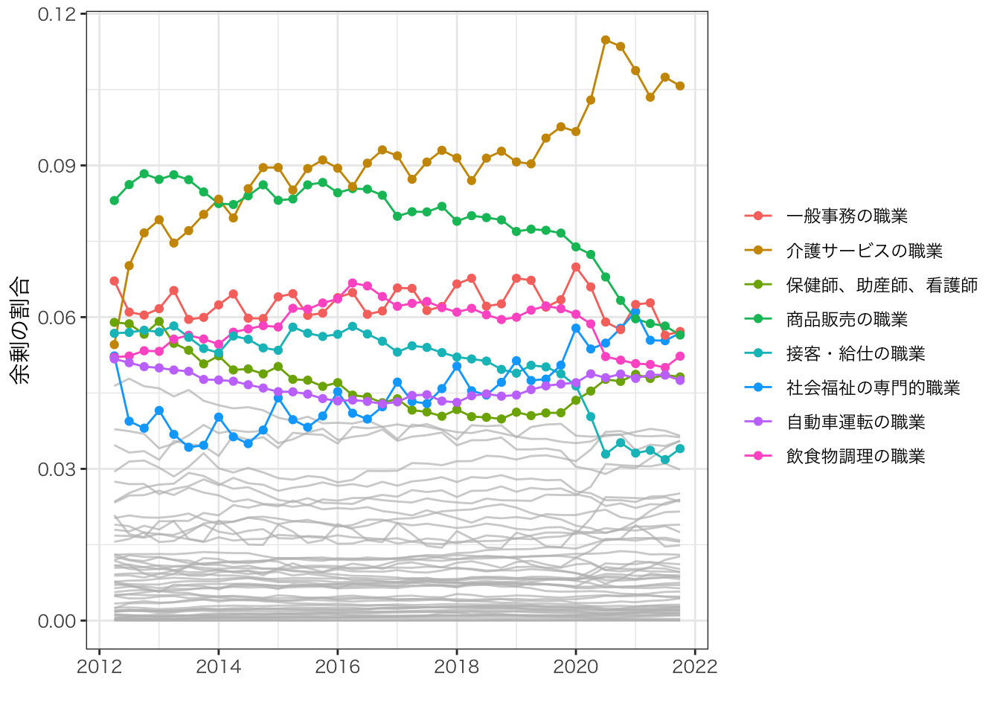
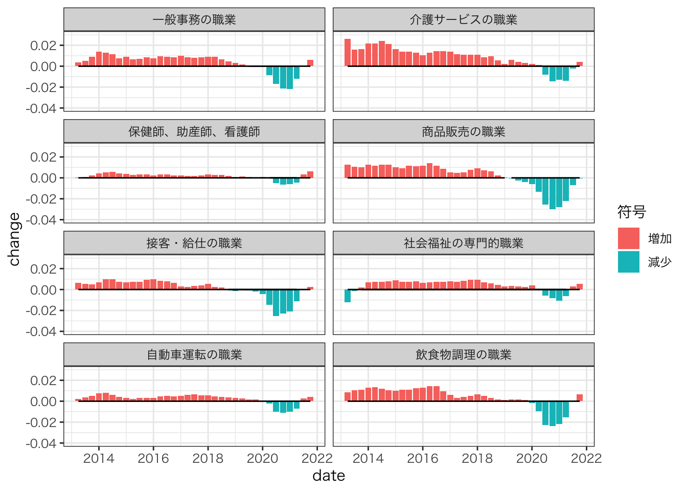
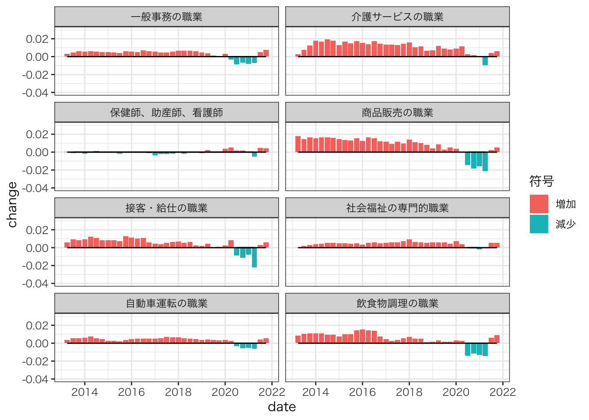
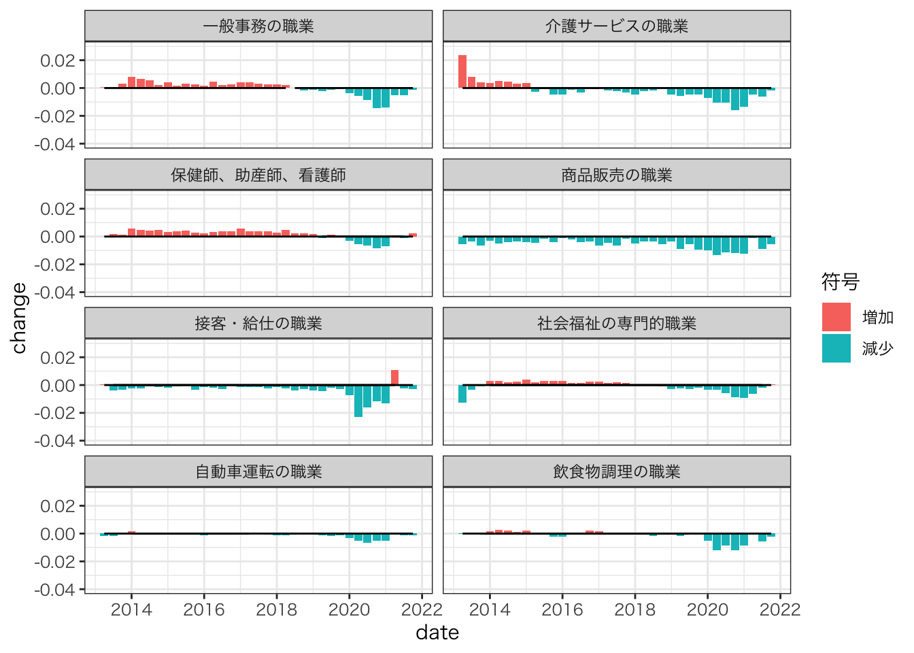

Chapter 4 厚生分析:セクター別分解分析
職種別の就職・求人件数が観察可能な2012年から2021年6月までの月次データ、Kawata and Sato (2021) の手法を拡張し、求職者の厚生変化に対する各職種の貢献を記述する。
- 四半期ごとに集計する
4.1 方法
標準的なDiamond-Mortencen-Pissarides型サーチモデル(Rogerson, Shimer, and Wright 2005)に準じて、以下の4条件式を仮定する
失業状態の価値観
\[rU=b + \sum_j\Delta_j\]
ただし
\[\Delta_j = \underbrace{\frac{m_{j}}{u}(W_j-U)}_{セクターjにおけるサーチ活動からの余剰}\]
\(m_j:\) セクターjにおける新規就職件数、\(u:\) （総）求職者数、\(W_j-U:\) セクターjにおける新規就職から生じる余剰
- 自由参入条件
\[k=\frac{m_j}{v_j}J_j\]
- ナッシュ交渉
\[(1-\beta)(W_j-U)=\beta J_j\]
- 自由参入条件とナッシュ交渉を連立すると、
\[W_j-U=\frac{\beta}{1-\beta}k\frac{v_j}{m_j}\]
よって
\[\Delta_j = \underbrace{\frac{m_j}{u}}_{入職率}\times \underbrace{\frac{\beta}{1-\beta}k\frac{v_j}{m_j}}_{入職からの余剰}\ \ (1)\]
- (1)式を用いて、以下のような厚生指標が識別できる
4.1.1 セクターの貢献率
- (1)式より\(\sum_j\Delta_j = k\beta/(1-\beta)\sum_j v/u\)なので、あるセクター\(j\)が生み出す余剰が全体に占める割合は、以下のように識別できる。
\[\frac{\Delta_j}{\sum_j\Delta_j}=\frac{v_j}{v}\]
4.1.2 余剰の変化に対する貢献
- （１）式より、サーチからの余剰の変化率は以下のように書き換えられる
\[\frac{\Delta - \Delta'}{\Delta'}=\frac{1}{\sum_j \frac{m_j}{u}(W_j-U)}\sum_j [\frac{m_j}{u}(W_j-U)- \frac{m'_j}{u'}(W'_j-U')]\]
\[=\frac{u'}{v'}\sum_j [\underbrace{\frac{m_j}{u}}_{入職率}\times\underbrace{\frac{v_j}{m_j}}_{入職からの余剰}- \underbrace{\frac{m'_j}{u'}}_{入職率}\times\underbrace{\frac{v'_j}{m'_j}}_{入職からの余剰}]\]
- よって各セクターが生み出す余剰は以下のように書き換えられる
\[\frac{\Delta - \Delta'}{\Delta'}=\frac{u'}{v'}\sum_{j}\underbrace{[\frac{v_j}{u}-\frac{v_j'}{u'}]}_{セクターjが生み出す余剰}\]
- さらに分解すると
\[=\frac{u'}{v'}\sum_j [\underbrace{\frac{m_j}{u}[\frac{v_j}{m_j}-\frac{v'_j}{m'_j}]}_{入職からの余剰変化の貢献}+\underbrace{[\frac{m_j}{u}- \frac{m'_j}{u'}]\frac{v'_j}{m'_j}}_{入職率変化の貢献}]\]
以上の議論は、セクター別の就職・求人件数のみを用いて、厚生変化をセクター別の貢献に分解可能であることを示している。
- セクター別の入職からの余剰と入職率の変化、それぞれの貢献も識別可能である。
上記の識別を可能とする重要な仮定は、パラメータ\(\beta\),\(k\)がセクター間で同一であるという仮定である。
4.2 職業大分類
セクター\(=\)職業大分類別
大分類別に就職、求人件数を集計し、厚生指標を示す。
4.2.1 Rコード
pacman::p_load("tidyverse",
"readxl",
"lubridate",
"tidymodels",
"Rfast")number.industry = 68
year <- c(rep(2012,10),
rep(2013,12),
rep(2014,12),
rep(2015,12),
rep(2016,12),
rep(2017,12),
rep(2018,12),
rep(2019,12),
rep(2020,12),
rep(2021,6)
)
month <- c(3:12,
rep(1:12,8),
1:6)
sel.row <- 5:72
sel.col <- c(1,19:130)
re.sel.col <- 2:113
raw.vacancy <-
"data/第21表.xlsx" |>
read_excel(sheet = "第２１表ー２ 有効求人（パート含む常用）") %>%
.[sel.row,sel.col] |>
pivot_longer(cols = re.sel.col,
values_to = "n") |>
mutate(year = rep(year, number.industry),
month = rep(month,number.industry),
type = "求人",
occupation = `職業別有効求人数（パートタイムを含む常用）`
) |>
select(-`職業別有効求人数（パートタイムを含む常用）`,-name)
raw.seeker <-
"data/第21表.xlsx" |>
read_excel(sheet = " 第２１表ー４ 有効求職（パート含む常用）") %>%
.[sel.row,sel.col] |>
pivot_longer(cols = re.sel.col,
values_to = "n") |>
mutate(year = rep(year, number.industry),
month = rep(month,number.industry),
type = "求職",
occupation = `職業別有効求職者数（パートタイムを含む常用）`
) |>
select(-`職業別有効求職者数（パートタイムを含む常用）`,-name)
raw.hir <-
"data/第21表.xlsx" |>
read_excel(sheet = "第２１表ー５ 就職件数（パート含む常用）") %>%
.[sel.row,sel.col] |>
pivot_longer(cols = re.sel.col,
values_to = "n") |>
mutate(year = rep(year, number.industry),
month = rep(month,number.industry),
type = "新規就職",
occupation = `職業別就職件数（パートタイムを含む常用）`
) |>
select(-`職業別就職件数（パートタイムを含む常用）`,-name)
df <-
rbind(raw.hir,
raw.vacancy,
raw.seeker) |>
filter(occupation == "管理的職業" |
occupation == "専門的・技術的職業" |
occupation == "事務的職業" |
occupation == "販売の職業" |
occupation == "サービスの職業" |
occupation == "輸送・機械運転の職業" |
occupation == "生産工程の職業" |
occupation == "建設・採掘の職業" |
occupation == "運搬・清掃・包装等の職業"|
occupation == "分類不能の職業") |>
mutate(quaterly = month |> cut(c(0,3,6,9,12), labels = c(1,2,3,4)),
date = yq(str_c(year,quaterly,sep = ":Q")),
n = as.numeric(n)
) |>
group_by(date,type,occupation) |>
mutate(n = n |> sum()) |>
ungroup() |>
distinct(year,quaterly,date,type,n,occupation) |>
pivot_wider(names_from = type,
values_from = n) |>
group_by(date) |>
mutate(総求職 = sum(求職),
総求人 = sum(求人),
総新規就職 = sum(新規就職)) |>
ungroup()4.2.2 セクターの貢献率
- 余剰全体に占める各セクターの割合を示す。
df |>
filter(occupation != "分類不能の職業") |>
filter(date >= make_date(2012,4)) |>
mutate(余剰の割合 = 求人/総求人) |>
ggplot(aes(x = date,
y = 余剰の割合,
group = occupation,
color = occupation,
shape = occupation)
) +
geom_line() +
geom_point() +
theme_bw(base_family = "HiraKakuPro-W3")
サービス/技術・専門の職種はそれぞれで余剰全体の２割以上を生み出している
- 技術・専門の職種には介護職が含まれており、当該職種が生み出す余剰が特に大きい
4.2.3 総余剰の変化
- 総余剰の前年同期変化率について、各セクターの貢献率を示す。
df.1 <-
df |>
filter(occupation != "分類不能の職業") |>
group_by(occupation, quaterly) |>
mutate(change = (lag(総求職)/lag(総求人))*((求人/総求職) - (lag(求人)/lag(総求職)))
) |>
ungroup() |>
filter(date >= make_date(2013,4))
df.1 |>
mutate(符号 = if_else(change >= 0, "増加", "減少")) |>
ggplot(aes(x = date,
y = change,
fill = 符号)
) +
geom_bar(stat = "identity") +
geom_line(aes(y=0)) +
facet_wrap(~occupation) +
theme_bw(base_family = "HiraKakuPro-W3") +
ylim(-0.10,0.06)
2020年第二四半期以降、全職種で余剰が低下している。
サービスの職種が、2020年間の総余剰の急落の大きな源泉となっている。
2021年においても依然として減少は続いている。
- 2020年の水準を上回るのは、生産工程の職種のみ
4.2.3.1 入職からの余剰の貢献
- 各セクターごとに、入職からの余剰の貢献を示す
df.1 <-
df |>
filter(occupation != "分類不能の職業") |>
group_by(occupation, quaterly) |>
mutate(change = (lag(総求職)/lag(総求人))*(新規就職/総求職)*((求人/新規就職) - (lag(求人)/lag(新規就職)))
) |>
ungroup() |>
filter(date >= make_date(2013,4))
df.1 |>
mutate(符号 = if_else(change>= 0, "増加", "減少")) |>
ggplot(aes(x = date,
y = change,
fill = 符号)
) +
geom_bar(stat = "identity") +
geom_line(aes(y=0)) +
facet_wrap(~occupation) +
theme_bw(base_family = "HiraKakuPro-W3") +
ylim(-0.10,0.06)
- サービスの職種において急落がみられ、かつ下落傾向が拡大している。
4.2.3.2 入職率の貢献
- 各セクター別に、入職率の貢献を示す。
df.1 <-
df |>
filter(occupation != "分類不能の職業") |>
group_by(occupation, quaterly) |>
mutate(change = (lag(総求職)/lag(総求人))*(lag(求人)/lag(新規就職))*((新規就職/総求職) - (lag(新規就職)/lag(総求職)))
) |>
ungroup() |>
filter(date >= make_date(2013,4))
df.1 |>
mutate(符号 = if_else(change>= 0, "増加", "減少")) |>
ggplot(aes(x = date,
y = change,
fill = 符号)
) +
geom_bar(stat = "identity") +
geom_line(aes(y=0)) +
facet_wrap(~occupation) +
theme_bw(base_family = "HiraKakuPro-W3") +
ylim(-0.10,0.06)
２０２０年間には、サービスの職種が最も下落している。
2021年第二四半期には、全職種において下げ止まりが見られる。
4.3 職業中分類
セクター\(=\)職業中分類
中分類別に就職、求人件数を集計し、厚生指標を示す。
4.3.1 Rコード
df <-
rbind(raw.hir,
raw.vacancy,
raw.seeker) |>
filter(occupation != "職業計" &
occupation != "管理的職業" &
occupation != "専門的・技術的職業" &
occupation != "事務的職業" &
occupation != "販売の職業" &
occupation != "サービスの職業" &
occupation != "輸送・機械運転の職業" &
occupation != "生産工程の職業" &
occupation != "建設・採掘の職業" &
occupation != "運搬・清掃・包装等の職業"&
occupation != "分類不能の職業") |>
mutate(quaterly = month |> cut(c(0,3,6,9,12), labels = c(1,2,3,4)),
date = str_c(year,quaterly,sep = ":Q") |> yq(),
n = as.numeric(n)
) |>
group_by(date,type,occupation) |>
mutate(n = n |> sum()) |>
ungroup() |>
distinct(year,quaterly,date,type,n,occupation) |>
pivot_wider(names_from = type,
values_from = n) |>
group_by(date) |>
mutate(総求職 = sum(求職),
総求人 = sum(求人),
総新規就職 = sum(新規就職)) |>
ungroup()
df.agre <-
df |>
group_by(occupation) |>
mutate(share = sum(求人)) |>
ungroup() |>
distinct(occupation,
share) |>
mutate(group = if_else(share <= nth(share, 49),"その他",occupation))
df <-
df |>
left_join(df.agre,
by = "occupation")4.3.2 セクターの貢献率
- 余剰全体に占める各セクターの割合を示す。
df.select <-
df |>
filter(date >= make_date(2012,4)) |>
filter(group != "その他") |>
mutate(余剰の割合 = 求人/総求人)
df.other <-
df |>
filter(date >= make_date(2012,4)) |>
filter(group == "その他") |>
mutate(余剰の割合 = 求人/総求人)
ggplot() +
geom_line(aes(y = 余剰の割合,
x = date,
group = occupation),
data = df.other,
colour = alpha("grey", 0.7)
) +
geom_line(aes(y = 余剰の割合,
x = date,
color = occupation),
data = df.select
) +
geom_point(aes(y = 余剰の割合,
x = date,
color = occupation),
data = df.select) +
xlab("") +
theme_bw(base_family = "HiraKakuPro-W3") +
theme(legend.title = element_blank())
介護サービスの職業が全体の10%近くの余剰を生み出している。
- COVID-19下で割合はさらに増加し、11%近くになっている。
商品販売の職業も余剰の大きな割合を生み出しているが、長期低下傾向にあり、COVID-19後急落している
接客・給仕の職業、飲食調理の職業についても、急落が認められる
保険師、助産師、看護士については、COVID-19下で増加している
4.3.3 総余剰の変化
- 総余剰の前年同期変化率について、各セクターの貢献率を示す。
df.1 <-
df |>
filter(occupation != "分類不能の職業") |>
filter(group != "その他") |>
group_by(group, quaterly) |>
mutate(change = (lag(総求職)/lag(総求人))*((求人/総求職) - (lag(求人)/lag(総求職)))
) |>
ungroup() |>
filter(date >= make_date(2013,4))
df.1 |>
mutate(符号 = if_else(change>= 0, "増加", "減少")) |>
ggplot(aes(x = date,
y = change,
fill = 符号)
) +
geom_bar(stat = "identity") +
geom_line(aes(y=0)) +
facet_wrap(~group,
ncol = 2) +
theme_bw(base_family = "HiraKakuPro-W3") +
ylim(-0.04,0.03)
2013年以降、余剰の増加傾向が続いていた。
特に介護サービスの職業で顕著
近年は頭打ち傾向がみられていた
COVID-19下において、全職種において余剰が急落した。
相対的に保健師、助産師、介護サービスへの影響は小さい
相対的に商品販売、接客・給仕、飲食物調理への影響が大きい
全職種で2021年になっても減少は続いている
4.3.3.1 入職からの余剰の貢献
- 各セクターごとに、入職からの余剰の貢献を示す
df.1 <-
df |>
filter(occupation != "分類不能の職業") |>
filter(group != "その他") |>
group_by(group, quaterly) |>
mutate(change = (lag(総求職)/lag(総求人))*(新規就職/総求職)*((求人/新規就職) - (lag(求人)/lag(新規就職)))
) |>
ungroup() |>
filter(date >= make_date(2013,4))
df.1 |>
mutate(符号 = if_else(change>= 0, "増加", "減少")) |>
ggplot(aes(x = date,
y = change,
fill = 符号)
) +
geom_bar(stat = "identity") +
geom_line(aes(y=0)) +
facet_wrap(~group,
ncol = 2) +
theme_bw(base_family = "HiraKakuPro-W3") +
ylim(-0.04,0.03)
特に商品販売、接客・給仕、飲食物調理において減少が大きい
- 下げ止まりの傾向も明確ではない
4.3.3.2 入職率の貢献
- 各セクター別に、入職率の貢献を示す。
df.1 <-
df |>
filter(occupation != "分類不能の職業") |>
filter(group != "その他") |>
group_by(group, quaterly) |>
mutate(change = (lag(総求職)/lag(総求人))*(lag(求人)/lag(新規就職))*((新規就職/総求職) - (lag(新規就職)/lag(総求職)))
) |>
ungroup() |>
filter(date >= make_date(2013,4))
df.1 |>
mutate(符号 = if_else(change>= 0, "増加", "減少")) |>
ggplot(aes(x = date,
y = change,
fill = 符号)
) +
geom_bar(stat = "identity") +
geom_line(aes(y=0)) +
facet_wrap(~group,
ncol = 2) +
theme_bw(base_family = "HiraKakuPro-W3") +
ylim(-0.04,0.03)
COVID-19下で入職率も急落した。
入職からの余剰と比べて、底打ち傾向が顕著
特に接客・給仕の職業、保健師、助産師、看護師の職業においては2021年第二四半期に底打ちしている
4.4 環境
sessionInfo()## R version 4.1.1 (2021-08-10)
## Platform: aarch64-apple-darwin20 (64-bit)
## Running under: macOS Big Sur 11.6
##
## Matrix products: default
## BLAS: /Library/Frameworks/R.framework/Versions/4.1-arm64/Resources/lib/libRblas.0.dylib
## LAPACK: /Library/Frameworks/R.framework/Versions/4.1-arm64/Resources/lib/libRlapack.dylib
##
## locale:
## [1] en_US.UTF-8/en_US.UTF-8/en_US.UTF-8/C/en_US.UTF-8/en_US.UTF-8
##
## attached base packages:
## [1] stats graphics grDevices utils datasets methods base
##
## other attached packages:
## [1] Rfast_2.0.3 RcppZiggurat_0.1.6 Rcpp_1.0.7 yardstick_0.0.8
## [5] workflowsets_0.1.0 workflows_0.2.3 tune_0.1.6 rsample_0.1.0
## [9] recipes_0.1.16 parsnip_0.1.7 modeldata_0.1.1 infer_1.0.0
## [13] dials_0.0.9 scales_1.1.1 broom_0.7.9 tidymodels_0.1.3
## [17] lubridate_1.7.10 readxl_1.3.1 forcats_0.5.1 stringr_1.4.0
## [21] dplyr_1.0.7 purrr_0.3.4 readr_2.0.1 tidyr_1.1.3
## [25] tibble_3.1.3 ggplot2_3.3.5 tidyverse_1.3.1
##
## loaded via a namespace (and not attached):
## [1] colorspace_2.0-2 ellipsis_0.3.2 class_7.3-19 fs_1.5.0
## [5] rstudioapi_0.13 listenv_0.8.0 furrr_0.2.3 farver_2.1.0
## [9] prodlim_2019.11.13 fansi_0.5.0 xml2_1.3.2 codetools_0.2-18
## [13] splines_4.1.1 knitr_1.33 jsonlite_1.7.2 pROC_1.17.0.1
## [17] dbplyr_2.1.1 compiler_4.1.1 httr_1.4.2 backports_1.2.1
## [21] assertthat_0.2.1 Matrix_1.3-4 fastmap_1.1.0 cli_3.0.1
## [25] htmltools_0.5.2 tools_4.1.1 gtable_0.3.0 glue_1.4.2
## [29] cellranger_1.1.0 jquerylib_0.1.4 DiceDesign_1.9 vctrs_0.3.8
## [33] iterators_1.0.13 timeDate_3043.102 gower_0.2.2 xfun_0.25
## [37] globals_0.14.0 rvest_1.0.1 lifecycle_1.0.0 pacman_0.5.1
## [41] future_1.21.0 MASS_7.3-54 ipred_0.9-11 hms_1.1.0
## [45] parallel_4.1.1 yaml_2.2.1 sass_0.4.0 rpart_4.1-15
## [49] stringi_1.7.3 highr_0.9 foreach_1.5.1 lhs_1.1.1
## [53] hardhat_0.1.6 lava_1.6.9 rlang_0.4.11 pkgconfig_2.0.3
## [57] evaluate_0.14 lattice_0.20-44 labeling_0.4.2 tidyselect_1.1.1
## [61] parallelly_1.27.0 plyr_1.8.6 magrittr_2.0.1 bookdown_0.23
## [65] R6_2.5.1 generics_0.1.0 DBI_1.1.1 pillar_1.6.2
## [69] haven_2.4.3 withr_2.4.2 survival_3.2-12 nnet_7.3-16
## [73] modelr_0.1.8 crayon_1.4.1 utf8_1.2.2 tzdb_0.1.2
## [77] rmarkdown_2.10 grid_4.1.1 reprex_2.0.1 digest_0.6.27
## [81] munsell_0.5.0 GPfit_1.0-8 bslib_0.3.0